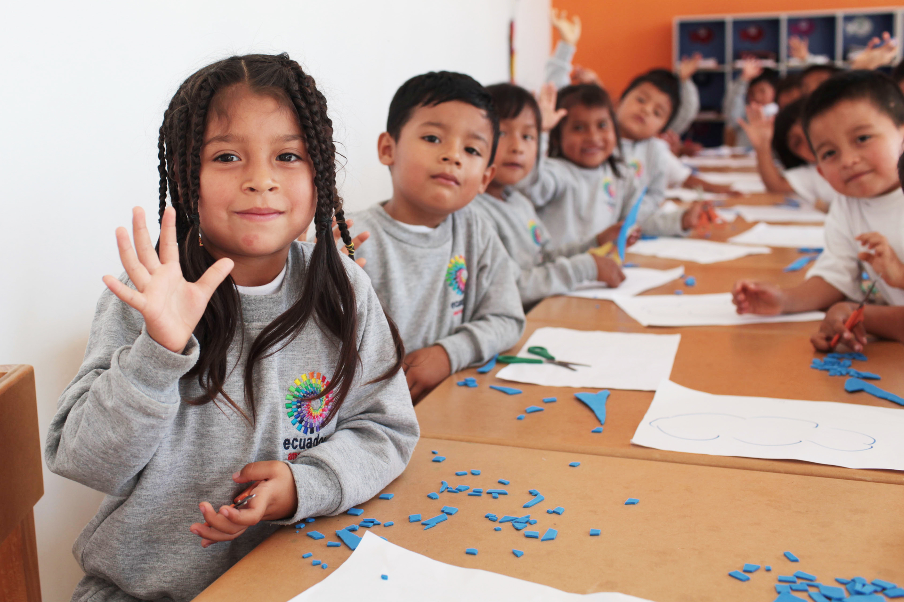
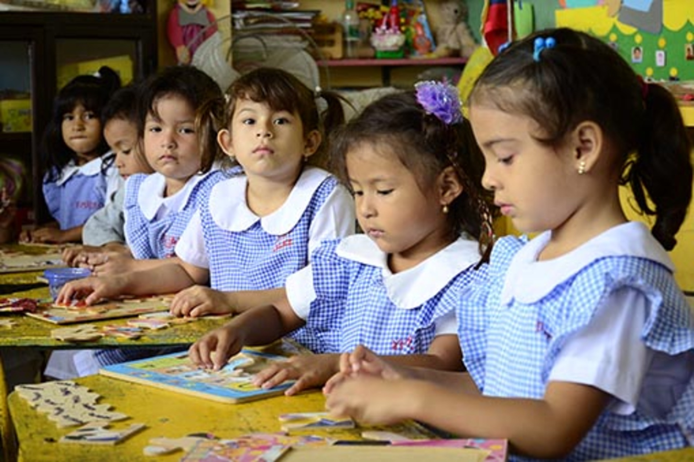
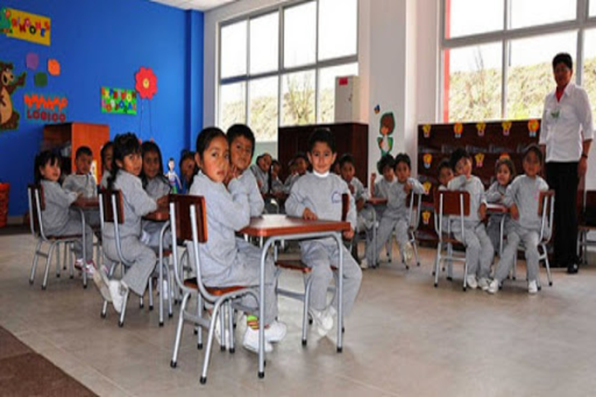
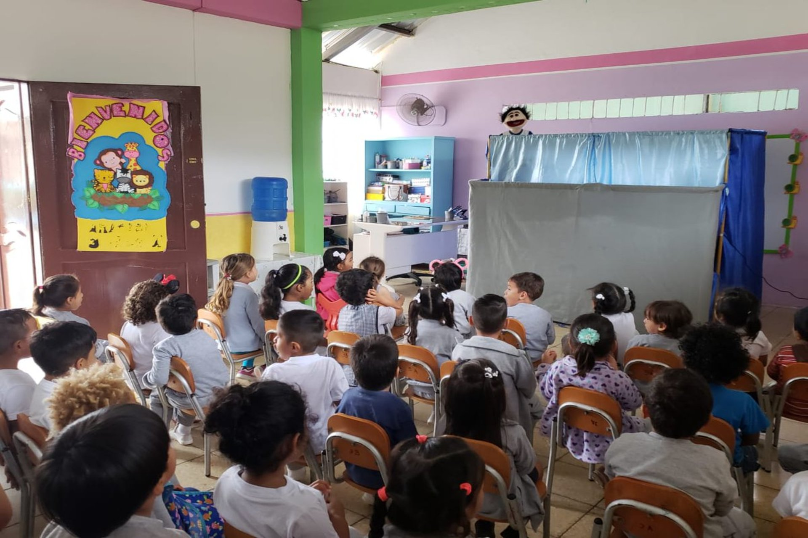

Inicial
En la Unidad Educativa Colegio San Jose de Olmedo, consciente de su compromiso con la sociedad y en busca de contribuir a la formación integral en la niñez y juventud ecuatoriana, propone en el año 2005, la creación del Nivel Inicial y Primero de Básica;
asumiendo la formación de niños y niñas.
Para establecer la base sólida hacia el éxito escolar, el proyecto educativo en estos niveles, se enfoca en afianzar el desarrollo de las áreas cognitiva, afectiva, psicomotriz, pues se ha determinado que esta
es la etapa más propicia para la construcción de redes neurocerebrales permanentes, con la mediación de experiencias adecuadas en ambientes afectivos.
Se trabaja a través de Centros de Aprendizaje. Esta metodología ayuda a los niños y niñas a tomar decisiones, a asumir responsabilidades y los estimula al uso autónomo de los materiales, favoreciendo la exploración
y la creatividad.
- 
- 
- 
- 